Chapitre 3 Tani, 2021
Variables explicatives :
aa: Acacia auriculiformissex: sexe
Variables expliquées :
wbc: White blood cell (10^3/μL)lym: Lymphocytes (10^3/μL)gran: Granulocytes (10^3/μL)rbc: Red blood cell (10^6/μL)hgb: Hémoglobine (g/dL)hct: Hématocrite (%)mcv: Mean corpuscular volume (fL)plt: Platelet (10^3/μL)
Comparer les effets des valiables explicatives sur les variables dépendantes prises individuellement, en tenant compte de l’interaction A.a * Sex.
3.1 Les données
Les données du fichier excel sont formatées en tableau dnfs.csv pour R.
df <- read_csv("data/dnfs.csv")
df <- df %>%
add_column(id = 1:nrow(.), .before = 1) %>%
mutate(aa = factor(aa),
sex = factor(sex))
df_copy <- df## Rows: 50
## Columns: 13
## $ id <int> 1, 2, 3, 4, 5, 6, 7, 8, 9, 10, 11, 12, 13, 14, 15, 16, 17, 18,~
## $ aa <fct> 0, 0, 0, 0, 0, 0, 0, 0, 0, 0, 0, 0, 0, 0, 0, 0.25, 0.25, 0.25,~
## $ sex <fct> M, M, M, M, M, M, M, M, F, F, F, F, F, F, F, M, M, M, M, M, F,~
## $ wbc <dbl> 30.80, 30.46, 45.30, 46.21, 50.32, 46.51, 36.08, 42.74, 43.48,~
## $ lym <dbl> 26.55, 28.68, 34.38, 35.49, 42.82, 29.25, 30.38, 32.44, 36.70,~
## $ gran <dbl> 3.75, 3.51, 9.29, 9.20, 6.39, 14.61, 5.09, 8.72, 5.78, 4.67, 5~
## $ lym_pc <dbl> 86.20, 87.60, 75.90, 76.80, 85.10, 62.90, 84.20, 75.90, 84.40,~
## $ gran_pc <dbl> 12.10, 11.50, 20.50, 19.90, 12.70, 31.40, 14.10, 20.40, 13.30,~
## $ rbc <dbl> 2.11, 2.14, 2.30, 2.31, 2.27, 2.29, 2.12, 2.33, 2.75, 2.70, 2.~
## $ hgb <dbl> 10.00, 10.30, 11.30, 11.50, 11.50, 10.60, 10.10, 10.90, 12.90,~
## $ hct <dbl> 28.3, 30.9, 31.8, 32.2, 34.1, 30.0, 28.4, 31.4, 36.5, 37.9, 31~
## $ mcv <dbl> 134.1, 144.1, 138.2, 139.5, 149.8, 130.9, 134.0, 134.7, 133.1,~
## $ plt <dbl> 11.60, 9.00, 10.30, 10.10, 5.00, 11.30, 10.60, 0.00, 10.20, 15~3.2 Globules blanc wbc(10^3/μL)
3.2.1 Exploration visuelle, boxplots
ggplot(df, aes(x = aa, y = wbc, colour = sex, fill = sex)) +
geom_boxplot(alpha = 0.5, position = position_dodge(width = 0.8), fatten = NULL) +
stat_summary(fun.y = mean, position = position_dodge(width = 0.8)) +
theme_bw() +
ylab("White blood cell (10^3/μL)") + xlab("Dose Acacia auriculiformis")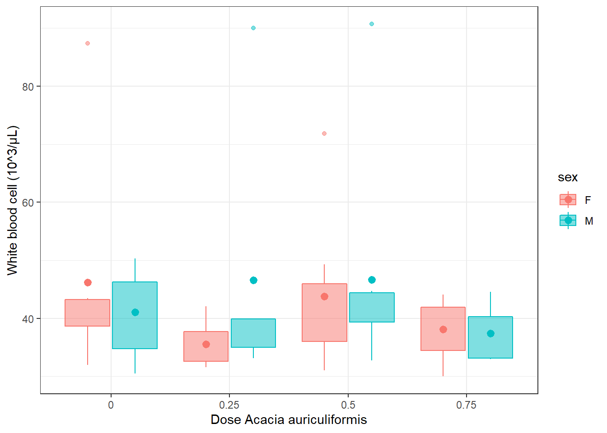
3.2.2 Identifier les valeurs aberrantes univariées
## # A tibble: 4 x 6
## aa id sex wbc is.outlier is.extreme
## <fct> <int> <fct> <dbl> <lgl> <lgl>
## 1 0 13 F 87.4 TRUE TRUE
## 2 0.25 18 M 90.0 TRUE TRUE
## 3 0.5 26 M 90.7 TRUE TRUE
## 4 0.5 39 F 71.8 TRUE TRUE## # A tibble: 4 x 6
## sex id aa wbc is.outlier is.extreme
## <fct> <int> <fct> <dbl> <lgl> <lgl>
## 1 F 13 0 87.4 TRUE TRUE
## 2 F 39 0.5 71.8 TRUE TRUE
## 3 M 18 0.25 90.0 TRUE TRUE
## 4 M 26 0.5 90.7 TRUE TRUEPure coincidence peut-être, ce sont les mêmes pour les 2 facteurs ! On pourrait choisir de les ignorer pour la suite en activant le code suivant. Je le ferai si jamais ceci améliorait la distribution des données.
Les 4 observations désignées comme étant extrêmes ont été écartées.
3.2.3 Revisualisation boxplots sans les valeurs extrèmes
ggplot(df, aes(x = aa, y = wbc, colour = sex, fill = sex)) +
geom_boxplot(alpha = 0.5, position = position_dodge(width = 0.8), fatten = NULL) +
stat_summary(fun.y = mean, position = position_dodge(width = 0.8)) +
theme_bw() +
ylab("White blood cell (10^3/μL)") + xlab("Dose Acacia auriculiformis")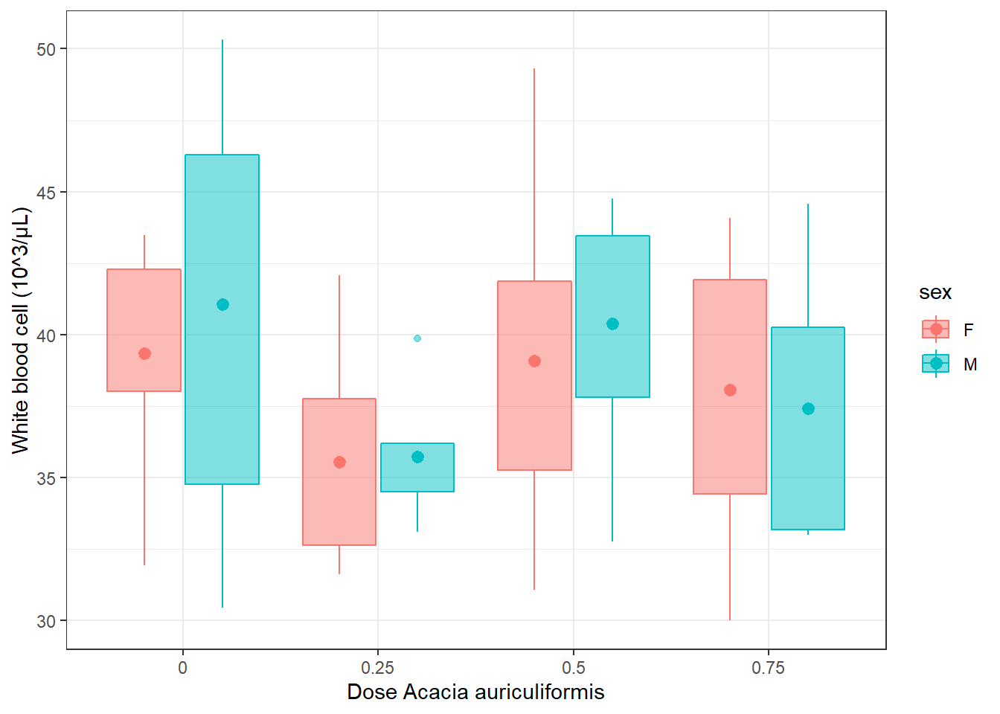
3.2.4 Visualisation de l’interaction probable
## aa sex N wbc sd se ci
## 1 0 F 6 39.33833 4.246652 1.733689 4.456588
## 2 0 M 8 41.05250 7.608268 2.689929 6.360671
## 3 0.25 F 5 35.55800 4.320598 1.932230 5.364731
## 4 0.25 M 4 35.73750 2.901108 1.450554 4.616309
## 5 0.5 F 6 39.08333 6.408344 2.616195 6.725144
## 6 0.5 M 7 40.38143 4.738848 1.791116 4.382703
## 7 0.75 F 6 38.07333 5.502275 2.246294 5.774283
## 8 0.75 M 4 37.41000 5.480706 2.740353 8.721026p <- position_dodge(0.1)
ggplot(df_ic, aes(x = aa, y = wbc, colour = sex, group = sex)) +
geom_errorbar(aes(ymin = wbc - ci, ymax = wbc + ci), width =.1, position = p) +
geom_line(position = p, size = 1) +
geom_point(position = p, size = 2) +
theme_bw() +
ylab("White blood cell (10^3/μL)") + xlab("Dose Acacia auriculiformis")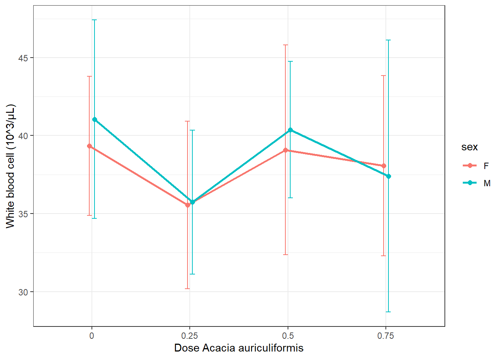
Sans les outliers, la distribution semble similaire chez les mâles comme chez les femmelles. Avec ces intervalles de confiance, il serait peu probable de trouver des différences significatives …
3.2.5 Le modèle
lm <- lm(wbc ~ aa * sex,
contrasts = list(aa = contr.sum, sex = contr.sum),
data = df)
Anova(lm, type = 3)## Anova Table (Type III tests)
##
## Response: wbc
## Sum Sq Df F value Pr(>F)
## (Intercept) 64056 1 2068.3264 <2e-16 ***
## aa 136 3 1.4631 0.2399
## sex 4 1 0.1406 0.7097
## aa:sex 10 3 0.1040 0.9572
## Residuals 1177 38
## ---
## Signif. codes: 0 '***' 0.001 '**' 0.01 '*' 0.05 '.' 0.1 ' ' 1L’interaction n’est pas significative, les effets des facteurs pris individuellement également. Mais vérifions la validité de l’anaova.
3.2.6 Hypothèses de l’ANOVA
3.2.6.1 Indépendance des résidus
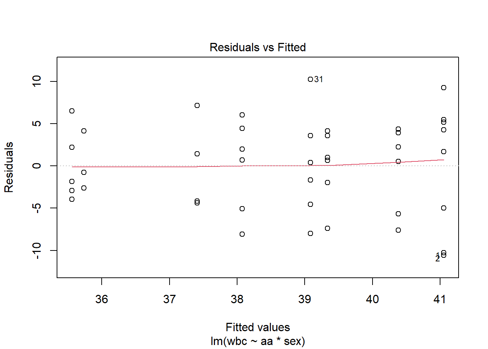
Plot des résidus vs fitted values : Les résidus semblent tous globalement centrés sur 0. Hypothèse valide.
3.2.6.2 Normalité des résidus
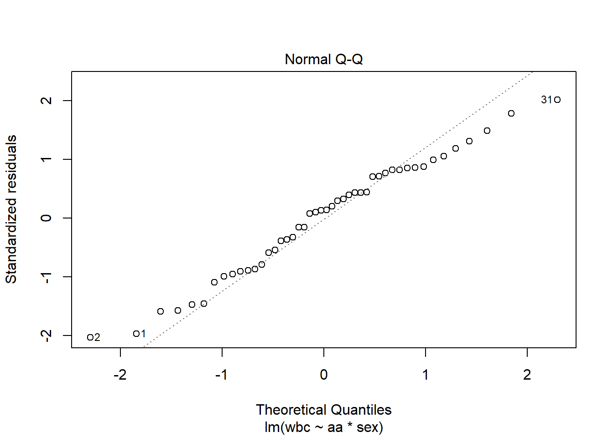
Plot des résidus standardisés vs quantiles théoriques :
Les points semblent bien répartis le long de la ligne. Les résidus peuvent être considérés comme distribués selon une loi normale.
Aussi le test de normalité de Shapiro-Wilk :
## # A tibble: 1 x 3
## variable statistic p.value
## <chr> <dbl> <dbl>
## 1 residuals(lm) 0.978 0.5183.2.6.3 Homogénéité des variances
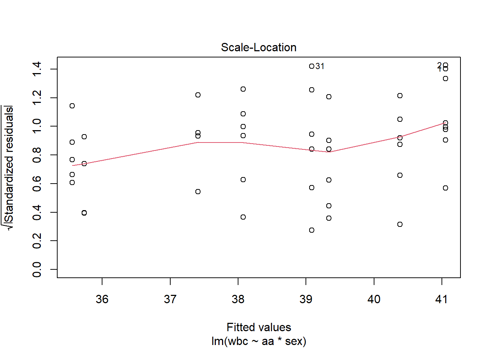
Plot des résidus standardisés vs valeurs prédites :
Les dispersions des résidus (leurs écartements verticaux) relatives à chaque groupe (croisement des modalités des 2 facteurs) sont globalement identiques, l’hypothèse d’homogénéité des résidus peut être acceptée.
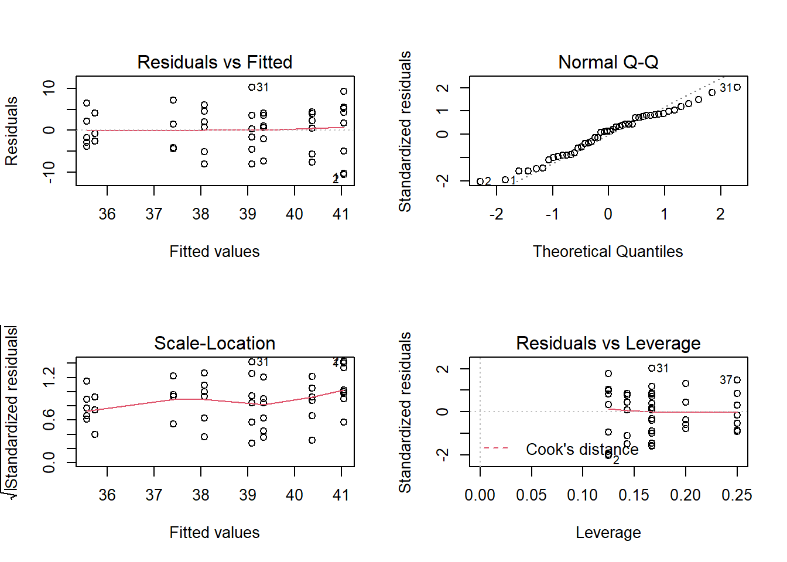
3.2.7 Ajustement du modèle sans le terme d’interaction
L’interaction n’étant pas significative, Avant d’interpréter les résultats, on va ajuster à nouveau le modèle de l’ANOVA à deux facteurs, mais sans le terme d’interaction.
Lorsque le modèle ne contient pas de terme d’interaction, on utilise les carrés de type II. Pour cela, il suffit simplement d’utiliser les contrastes par défaut qui sont de type contr.treatment (donc ne pas les modifier dans le code).
## Anova Table (Type II tests)
##
## Response: wbc
## Sum Sq Df F value Pr(>F)
## aa 135.46 3 1.5602 0.2136
## sex 6.99 1 0.2414 0.6258
## Residuals 1186.51 41Il n’y aurait pas de différence d’effet significatif entre les doses Aa ou suivant le sexe.
3.2.8 Comparaisons par paires
Les moyennes sont ensuite comparées 2 à 2 selon l’approche des Contrastes de Tukey, fonction glht(), package multcomp.
C1 <- glht(lm, mcp(aa = "Tukey"))$linfct
C2 <- glht(lm, mcp(sex = "Tukey"))$linfct
C <- rbind(C1, C2)
C## (Intercept) aa0.25 aa0.5 aa0.75 sexM
## 0.25 - 0 0 1 0 0 0
## 0.5 - 0 0 0 1 0 0
## 0.75 - 0 0 0 0 1 0
## 0.5 - 0.25 0 -1 1 0 0
## 0.75 - 0.25 0 -1 0 1 0
## 0.75 - 0.5 0 0 -1 1 0
## M - F 0 0 0 0 1##
## Simultaneous Tests for General Linear Hypotheses
##
## Fit: lm(formula = wbc ~ aa + sex, data = df)
##
## Linear Hypotheses:
## Estimate Std. Error t value Pr(>|t|)
## 0.25 - 0 == 0 -4.5802 2.3074 -1.985 0.249
## 0.5 - 0 == 0 -0.5096 2.0727 -0.246 0.999
## 0.75 - 0 == 0 -2.3750 2.2442 -1.058 0.795
## 0.5 - 0.25 == 0 4.0705 2.3376 1.741 0.372
## 0.75 - 0.25 == 0 2.2052 2.4727 0.892 0.877
## 0.75 - 0.5 == 0 -1.8653 2.2736 -0.820 0.906
## M - F == 0 0.7869 1.6016 0.491 0.985
## (Adjusted p values reported -- single-step method)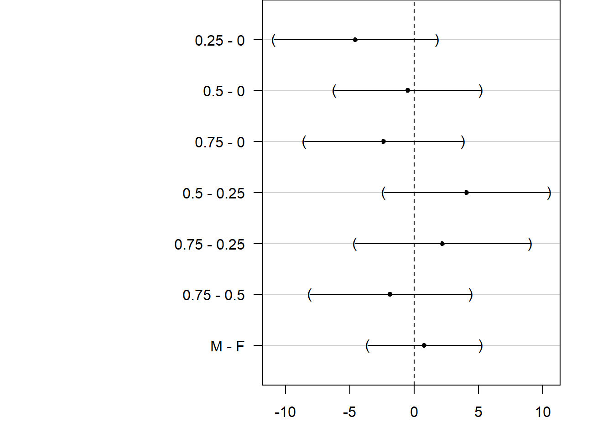
3.3 Lymphocytes lym (10^3/μL)
3.3.1 Exploration visuelle, boxplots
ggplot(df, aes(x = aa, y = lym, colour = sex, fill = sex)) +
geom_boxplot(alpha = 0.5, position = position_dodge(width = 0.8), fatten = NULL) +
stat_summary(fun.y = mean, position = position_dodge(width = 0.8)) +
theme_bw() +
ylab("Lymphocytes (10^3/μL)")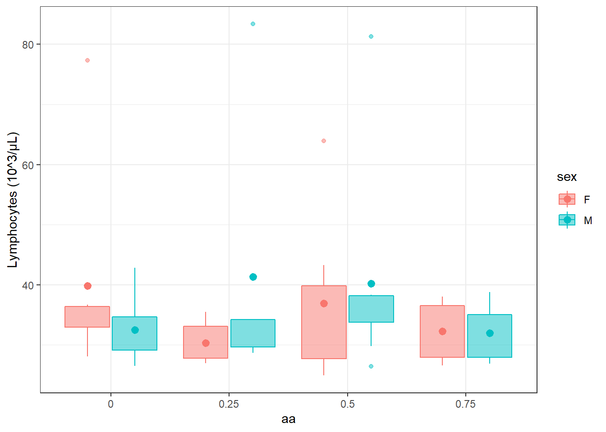
La distribution semble similaire à celle de la variable précédente.
3.3.2 Moyennes et intervalles de confiance
## aa sex N lym sd se ci
## 1 0 F 7 39.86857 16.777861 6.341435 15.516933
## 2 0 M 8 32.49875 5.127409 1.812813 4.286622
## 3 0.25 F 5 30.31600 3.752497 1.678167 4.659340
## 4 0.25 M 5 41.30600 23.609447 10.558466 29.315000
## 5 0.5 F 7 36.94857 13.479475 5.094763 12.466435
## 6 0.5 M 8 40.21375 17.120058 6.052855 14.312727
## 7 0.75 F 6 32.28500 5.067326 2.068727 5.317832
## 8 0.75 M 4 31.94500 5.452880 2.726440 8.6767493.3.3 Visualisation, courbes
p <- position_dodge(0.1)
ggplot(df_ic, aes(x = aa, y = lym, colour = sex, group = sex)) +
geom_errorbar(aes(ymin = lym - ci, ymax = lym + ci), width =.1, position = p) +
geom_line(position = p, size = 1) +
geom_point(position = p, size = 2)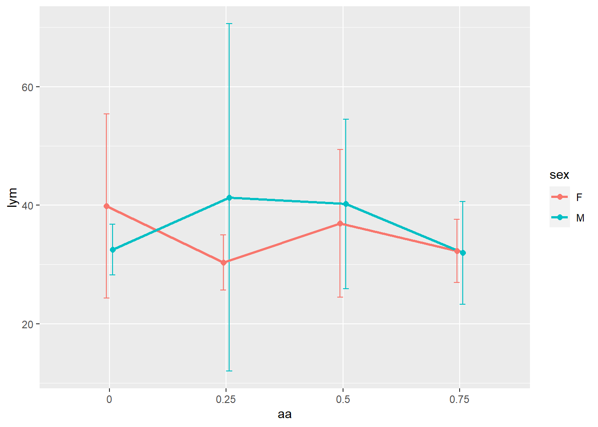
Une interaction semble évidente ici …
3.3.4 Identifier les valeurs aberrantes univariées
## # A tibble: 4 x 6
## aa id sex lym is.outlier is.extreme
## <fct> <int> <fct> <dbl> <lgl> <lgl>
## 1 0 13 F 77.3 TRUE TRUE
## 2 0.25 18 M 83.4 TRUE TRUE
## 3 0.5 26 M 81.3 TRUE TRUE
## 4 0.5 39 F 63.9 TRUE FALSE## # A tibble: 4 x 6
## sex id aa lym is.outlier is.extreme
## <fct> <int> <fct> <dbl> <lgl> <lgl>
## 1 F 13 0 77.3 TRUE TRUE
## 2 F 39 0.5 63.9 TRUE TRUE
## 3 M 18 0.25 83.4 TRUE TRUE
## 4 M 26 0.5 81.3 TRUE TRUE3.3.5 Revisualisation boxplots sans les valeurs extrèmes
ggplot(df, aes(x = aa, y = lym, colour = sex, fill = sex)) +
geom_boxplot(alpha = 0.5, position = position_dodge(width = 0.8), fatten = NULL) +
stat_summary(fun.y = mean, position = position_dodge(width = 0.8)) +
theme_bw() +
ylab("LYM")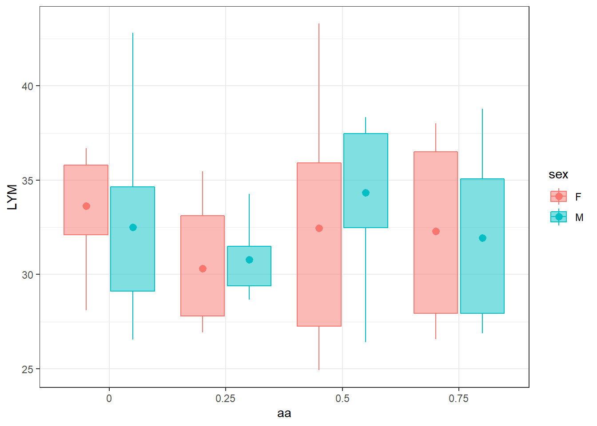
3.3.6 Revisualisation courbes sans les valeurs extrèmes
## aa sex N lym sd se ci
## 1 0 F 6 33.63000 3.296944 1.345972 3.459931
## 2 0 M 8 32.49875 5.127409 1.812813 4.286622
## 3 0.25 F 5 30.31600 3.752497 1.678167 4.659340
## 4 0.25 M 4 30.79000 2.442594 1.221297 3.886713
## 5 0.5 F 6 32.45167 6.940419 2.833414 7.283523
## 6 0.5 M 7 34.34429 4.517384 1.707411 4.177884
## 7 0.75 F 6 32.28500 5.067326 2.068727 5.317832
## 8 0.75 M 4 31.94500 5.452880 2.726440 8.676749ggplot(df_ic, aes(x = aa, y = lym, colour = sex, group = sex)) +
geom_errorbar(aes(ymin = lym - ci, ymax = lym + ci), width =.1, position = p) +
geom_line(position = p, size = 1) +
geom_point(position = p, size = 2)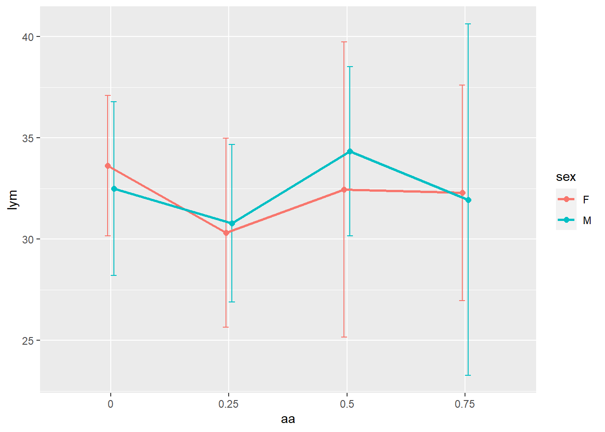
Sans les outliers, la distribution semble identique chez les mâles et les femmelles. …
3.3.7 Le modèle
lm <- lm(lym ~ aa * sex,
contrasts = list(aa = contr.sum, sex = contr.sum),
data = df)
Anova(lm, type = 3)## Anova Table (Type III tests)
##
## Response: lym
## Sum Sq Df F value Pr(>F)
## (Intercept) 45439 1 1932.5464 <2e-16 ***
## aa 50 3 0.7067 0.5540
## sex 1 1 0.0232 0.8797
## aa:sex 16 3 0.2296 0.8752
## Residuals 893 38
## ---
## Signif. codes: 0 '***' 0.001 '**' 0.01 '*' 0.05 '.' 0.1 ' ' 1Les différences ne sont pas significatives. Mais vérifions la validité de l’ANOVA.
3.3.9 Comparaisons par paires
Contrastes de Tukey, fonction glht(), package multcomp.
## Anova Table (Type II tests)
##
## Response: lym
## Sum Sq Df F value Pr(>F)
## aa 50.28 3 0.7554 0.5256
## sex 0.54 1 0.0244 0.8765
## Residuals 909.68 41C1 <- glht(lm, mcp(aa = "Tukey"))$linfct
C2 <- glht(lm, mcp(sex = "Tukey"))$linfct
C <- rbind(C1, C2)
C## (Intercept) aa0.25 aa0.5 aa0.75 sexM
## 0.25 - 0 0 1 0 0 0
## 0.5 - 0 0 0 1 0 0
## 0.75 - 0 0 0 0 1 0
## 0.5 - 0.25 0 -1 1 0 0
## 0.75 - 0.25 0 -1 0 1 0
## 0.75 - 0.5 0 0 -1 1 0
## M - F 0 0 0 0 1##
## Simultaneous Tests for General Linear Hypotheses
##
## Fit: lm(formula = lym ~ aa + sex, data = df)
##
## Linear Hypotheses:
## Estimate Std. Error t value Pr(>|t|)
## 0.25 - 0 == 0 -2.4291 2.0203 -1.202 0.711
## 0.5 - 0 == 0 0.4944 1.8148 0.272 0.998
## 0.75 - 0 == 0 -0.7970 1.9650 -0.406 0.993
## 0.5 - 0.25 == 0 2.9235 2.0468 1.428 0.565
## 0.75 - 0.25 == 0 1.6321 2.1651 0.754 0.929
## 0.75 - 0.5 == 0 -1.2914 1.9908 -0.649 0.958
## M - F == 0 0.2192 1.4024 0.156 1.000
## (Adjusted p values reported -- single-step method)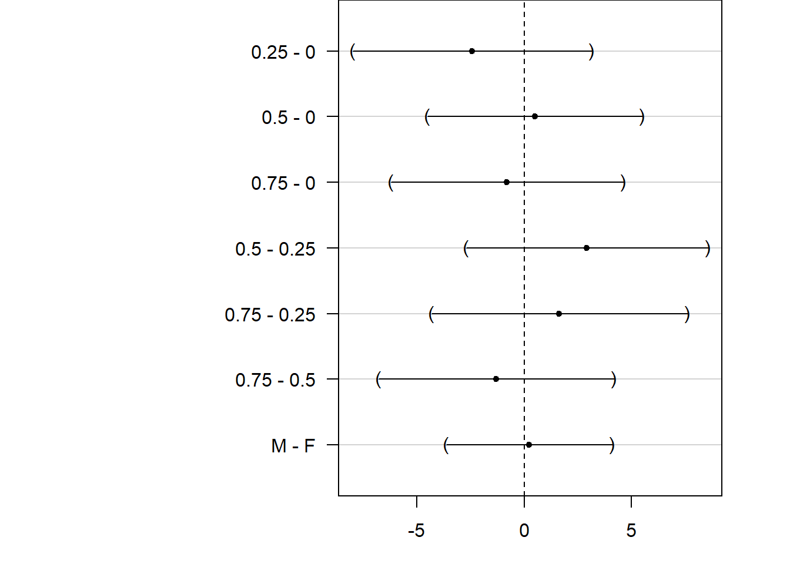
3.4 Granulocytes gran (10^3/μL)
3.4.1 Exploration visuelle, boxplots
ggplot(df, aes(x = aa, y = gran, colour = sex, fill = sex)) +
geom_boxplot(alpha = 0.5, position = position_dodge(width = 0.8), fatten = NULL) +
stat_summary(fun.y = mean, position = position_dodge(width = 0.8)) +
theme_bw() +
ylab("Granulocytes (10^3/μL)")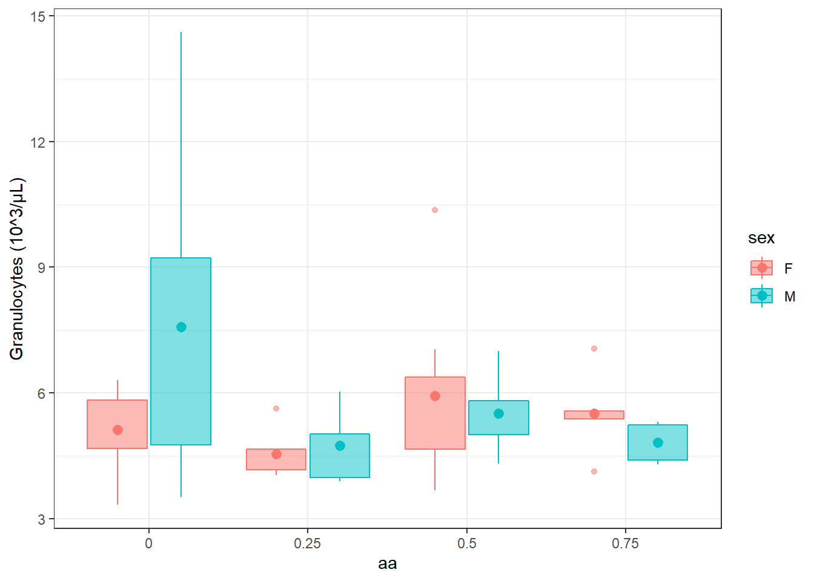
3.4.2 Moyennes et intervalles de confiance
## aa sex N gran sd se ci
## 1 0 F 7 5.112857 1.0035722 0.3793146 0.9281495
## 2 0 M 8 7.570000 3.6862331 1.3032802 3.0817680
## 3 0.25 F 5 4.546000 0.6474797 0.2895617 0.8039523
## 4 0.25 M 5 4.736000 0.8721984 0.3900590 1.0829773
## 5 0.5 F 7 5.927143 2.2391793 0.8463302 2.0708954
## 6 0.5 M 8 5.503750 0.9006813 0.3184389 0.7529884
## 7 0.75 F 6 5.513333 0.9354927 0.3819133 0.9817394
## 8 0.75 M 4 4.810000 0.5243409 0.2621704 0.83434333.4.3 Visualisation, courbes
ggplot(df_ic, aes(x = aa, y = gran, colour = sex, group = sex)) +
geom_errorbar(aes(ymin = gran - ci, ymax = gran + ci), width =.1, position = p) +
geom_line(position = p, size = 1) +
geom_point(position = p, size = 2)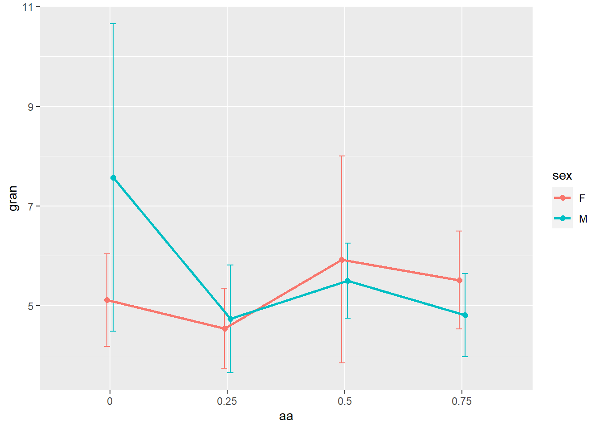
3.4.4 Identifier les valeurs aberrantes univariées
## # A tibble: 3 x 6
## aa id sex gran is.outlier is.extreme
## <fct> <int> <fct> <dbl> <lgl> <lgl>
## 1 0 6 M 14.6 TRUE FALSE
## 2 0.5 36 F 10.4 TRUE TRUE
## 3 0.75 49 F 7.06 TRUE FALSE## # A tibble: 2 x 6
## sex id aa gran is.outlier is.extreme
## <fct> <int> <fct> <dbl> <lgl> <lgl>
## 1 F 36 0.5 10.4 TRUE TRUE
## 2 M 6 0 14.6 TRUE TRUEOn exclura les 2 dernières observations
3.4.5 Revisualisation boxplots sans les valeurs extrèmes
ggplot(df, aes(x = aa, y = gran, colour = sex, fill = sex)) +
geom_boxplot(alpha = 0.5, position = position_dodge(width = 0.8), fatten = NULL) +
stat_summary(fun.y = mean, position = position_dodge(width = 0.8)) +
theme_bw() +
ylab("GRAN")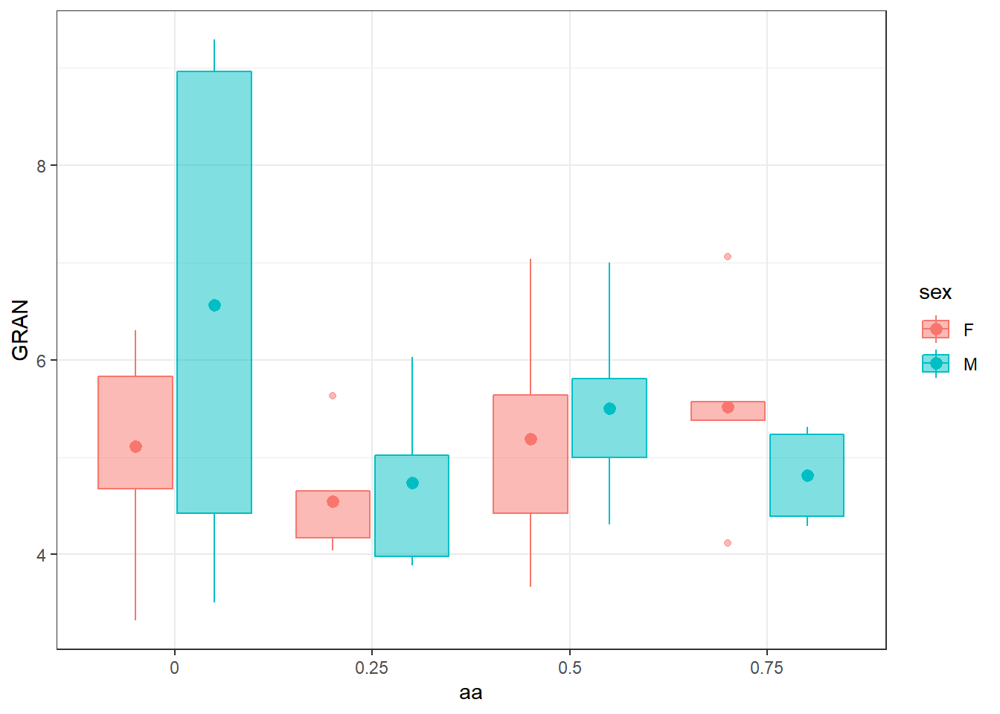
3.4.6 Revisualisation courbes sans les valeurs extrèmes
## aa sex N gran sd se ci
## 1 0 F 7 5.112857 1.0035722 0.3793146 0.9281495
## 2 0 M 7 6.564286 2.5323366 0.9571333 2.3420207
## 3 0.25 F 5 4.546000 0.6474797 0.2895617 0.8039523
## 4 0.25 M 5 4.736000 0.8721984 0.3900590 1.0829773
## 5 0.5 F 6 5.186667 1.1878328 0.4849307 1.2465540
## 6 0.5 M 8 5.503750 0.9006813 0.3184389 0.7529884
## 7 0.75 F 6 5.513333 0.9354927 0.3819133 0.9817394
## 8 0.75 M 4 4.810000 0.5243409 0.2621704 0.8343433ggplot(df_ic, aes(x = aa, y = gran, colour = sex, group = sex)) +
geom_errorbar(aes(ymin = gran - ci, ymax = gran + ci), width =.1, position = p) +
geom_line(position = p, size = 1) +
geom_point(position = p, size = 2)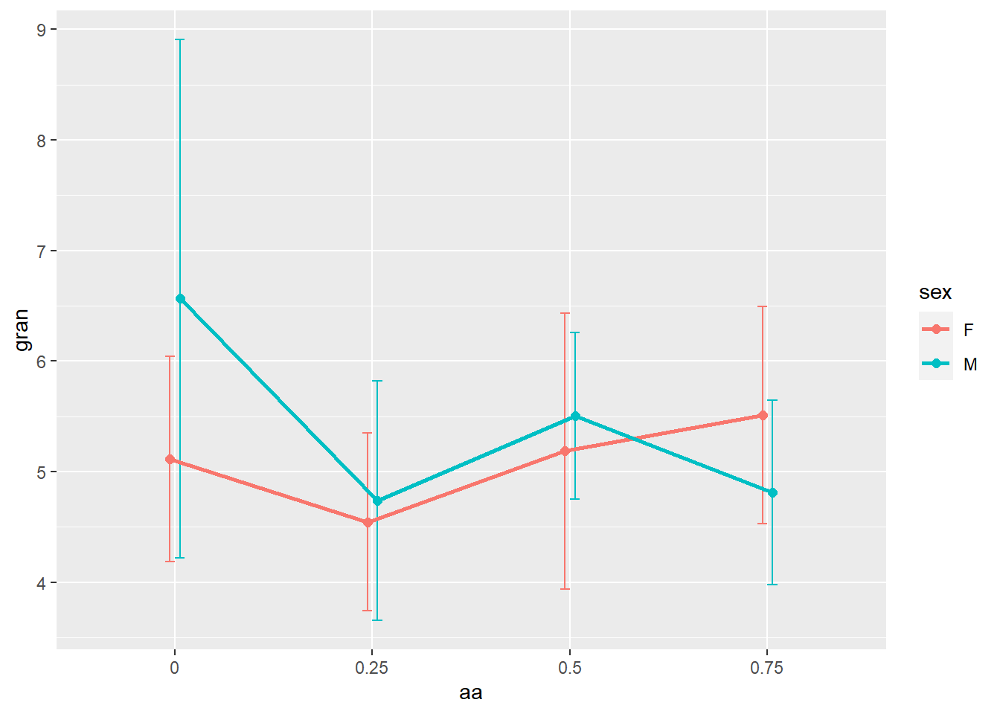
3.4.7 Le modèle
lm <- lm(gran ~ aa * sex,
contrasts = list(aa = contr.sum, sex = contr.sum),
data = df)
Anova(lm, type = 3)## Anova Table (Type III tests)
##
## Response: gran
## Sum Sq Df F value Pr(>F)
## (Intercept) 1263.75 1 752.5327 <2e-16 ***
## aa 8.61 3 1.7098 0.1804
## sex 1.13 1 0.6730 0.4169
## aa:sex 6.92 3 1.3737 0.2647
## Residuals 67.17 40
## ---
## Signif. codes: 0 '***' 0.001 '**' 0.01 '*' 0.05 '.' 0.1 ' ' 1Les différences ne sont pas significatives. Mais vérifions la validité de l’ANOVA.
3.4.8 Homogénéité des variances
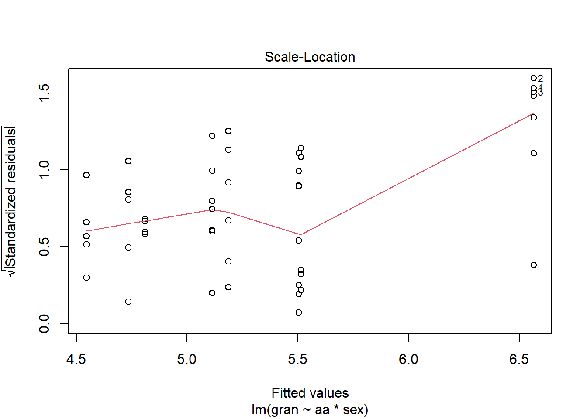
Les hypothèses de l’ANOVA ne sont à l’évidence pas respectées. Les transformations log(), sqrt() ni Box-Cox n’améliorent pas non plus la distribution. Ajustons le modèle sans le terme d’interaction et voyons comment il se comporte, sans les 2 points extrêmes.
## Anova Table (Type II tests)
##
## Response: gran
## Sum Sq Df F value Pr(>F)
## aa 8.399 3 1.6248 0.1976
## sex 2.075 1 1.2042 0.2786
## Residuals 74.094 43=> Différence d’effet non significative.
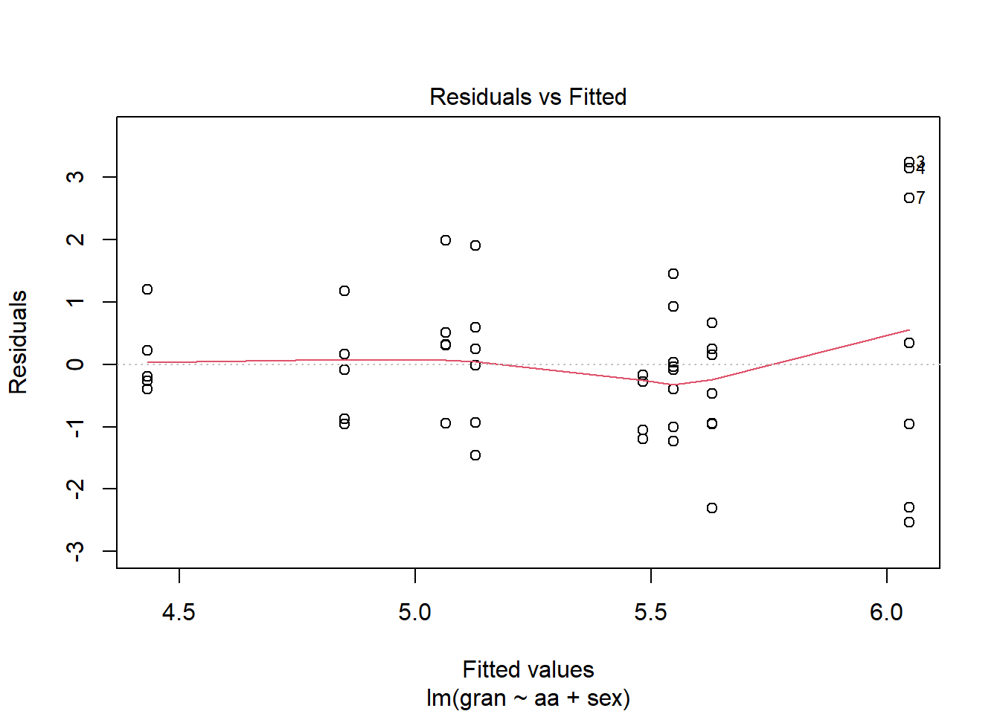
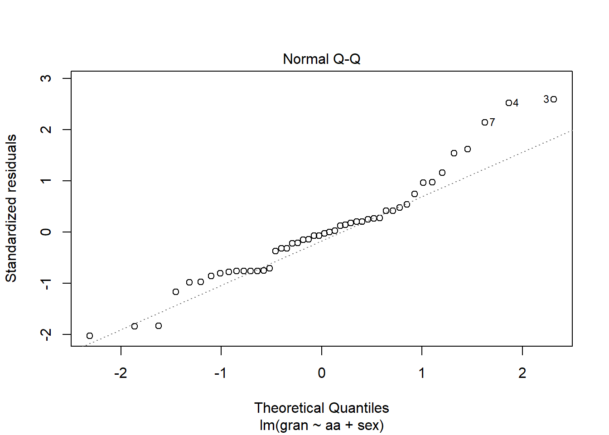
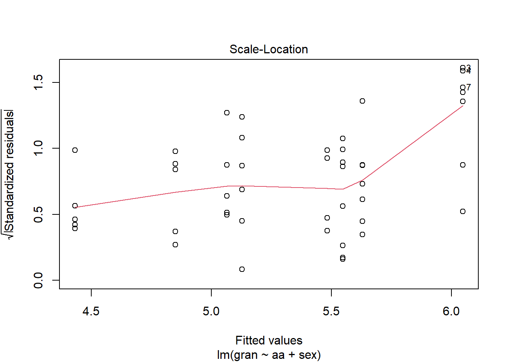
3.4.8.1 Comparaisons par paires
C1 <- glht(lm, mcp(aa = "Tukey"))$linfct
C2 <- glht(lm, mcp(sex = "Tukey"))$linfct
C <- rbind(C1, C2)
C## (Intercept) aa0.25 aa0.5 aa0.75 sexM
## 0.25 - 0 0 1 0 0 0
## 0.5 - 0 0 0 1 0 0
## 0.75 - 0 0 0 0 1 0
## 0.5 - 0.25 0 -1 1 0 0
## 0.75 - 0.25 0 -1 0 1 0
## 0.75 - 0.5 0 0 -1 1 0
## M - F 0 0 0 0 1##
## Simultaneous Tests for General Linear Hypotheses
##
## Fit: lm(formula = gran ~ aa + sex, data = df)
##
## Linear Hypotheses:
## Estimate Std. Error t value Pr(>|t|)
## 0.25 - 0 == 0 -1.19757 0.54350 -2.203 0.165
## 0.5 - 0 == 0 -0.50063 0.49689 -1.008 0.823
## 0.75 - 0 == 0 -0.56469 0.54484 -1.036 0.807
## 0.5 - 0.25 == 0 0.69694 0.54418 1.281 0.661
## 0.75 - 0.25 == 0 0.63288 0.58828 1.076 0.786
## 0.75 - 0.5 == 0 -0.06406 0.54742 -0.117 1.000
## M - F == 0 0.41883 0.38167 1.097 0.774
## (Adjusted p values reported -- single-step method)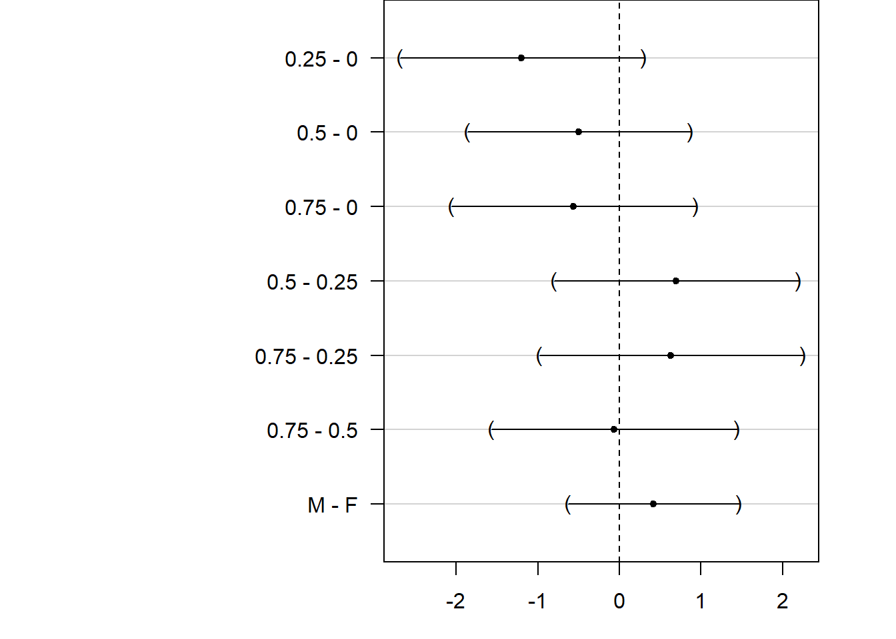
3.5 Red blood cell rbc (10^6/μL)
3.5.1 Exploration visuelle, boxplots
ggplot(df, aes(x = aa, y = rbc, colour = sex, fill = sex)) +
geom_boxplot(alpha = 0.5, position = position_dodge(width = 0.8), fatten = NULL) +
stat_summary(fun.y = mean, position = position_dodge(width = 0.8)) +
theme_bw() +
ylab("RBC")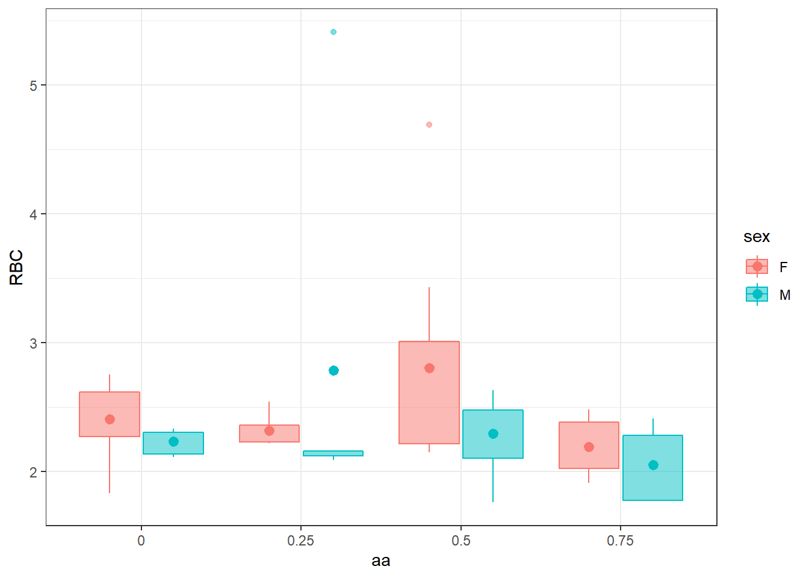
3.5.2 Moyennes et intervalles de confiance
## aa sex N rbc sd se ci
## 1 0 F 7 2.405714 0.31537582 0.11920085 0.29167398
## 2 0 M 8 2.233750 0.09334077 0.03300095 0.07803484
## 3 0.25 F 5 2.316000 0.13794927 0.06169279 0.17128664
## 4 0.25 M 5 2.784000 1.46820639 0.65660186 1.82301901
## 5 0.5 F 7 2.801429 0.94453566 0.35700092 0.87354979
## 6 0.5 M 8 2.292500 0.30098647 0.10641479 0.25163099
## 7 0.75 F 6 2.191667 0.23718488 0.09683032 0.24891026
## 8 0.75 M 4 2.050000 0.32506410 0.16253205 0.517249523.5.3 Visualisation, courbes
ggplot(df_ic, aes(x = aa, y = rbc, colour = sex, group = sex)) +
geom_errorbar(aes(ymin = rbc - ci, ymax = rbc + ci), width =.1, position = p) +
geom_line(position = p, size = 1) +
geom_point(position = p, size = 2)
=> Une interaction semble évidente …
3.5.4 Identifier les valeurs aberrantes univariées
## # A tibble: 5 x 6
## aa id sex rbc is.outlier is.extreme
## <fct> <int> <fct> <dbl> <lgl> <lgl>
## 1 0 9 F 2.75 TRUE FALSE
## 2 0 13 F 1.83 TRUE FALSE
## 3 0.25 18 M 5.41 TRUE TRUE
## 4 0.5 34 F 3.43 TRUE FALSE
## 5 0.5 39 F 4.69 TRUE TRUE=> 2 points extrêmes : 18 et 39.
## # A tibble: 3 x 6
## sex id aa rbc is.outlier is.extreme
## <fct> <int> <fct> <dbl> <lgl> <lgl>
## 1 F 34 0.5 3.43 TRUE FALSE
## 2 F 39 0.5 4.69 TRUE TRUE
## 3 M 18 0.25 5.41 TRUE TRUE=> Les mêmes
On exclura les 3 observations concernées
3.5.5 Revisualisation boxplots sans les valeurs extrèmes
ggplot(df, aes(x = aa, y = rbc, colour = sex, fill = sex)) +
geom_boxplot(alpha = 0.5, position = position_dodge(width = 0.8), fatten = NULL) +
stat_summary(fun.y = mean, position = position_dodge(width = 0.8)) +
theme_bw() +
ylab("RBC")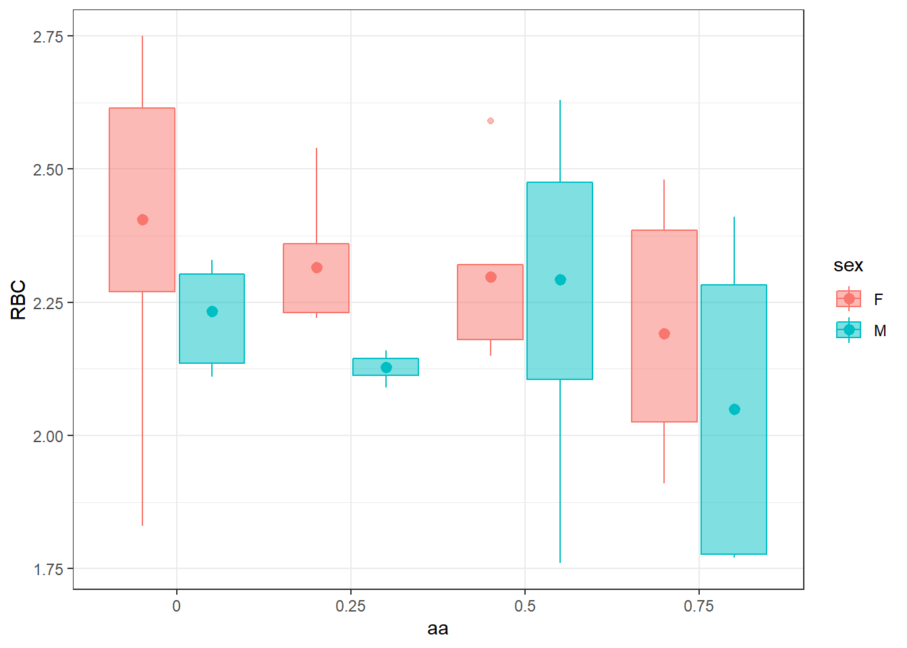
3.5.6 Revisualisation courbes sans les valeurs extrèmes
## aa sex N rbc sd se ci
## 1 0 F 7 2.405714 0.31537582 0.11920085 0.29167398
## 2 0 M 8 2.233750 0.09334077 0.03300095 0.07803484
## 3 0.25 F 5 2.316000 0.13794927 0.06169279 0.17128664
## 4 0.25 M 4 2.127500 0.02986079 0.01493039 0.04751518
## 5 0.5 F 5 2.298000 0.17598295 0.07870197 0.21851170
## 6 0.5 M 8 2.292500 0.30098647 0.10641479 0.25163099
## 7 0.75 F 6 2.191667 0.23718488 0.09683032 0.24891026
## 8 0.75 M 4 2.050000 0.32506410 0.16253205 0.51724952ggplot(df_ic, aes(x = aa, y = rbc, colour = sex, group = sex)) +
geom_errorbar(aes(ymin = rbc - ci, ymax = rbc + ci), width =.1, position = p) +
geom_line(position = p, size = 1) +
geom_point(position = p, size = 2)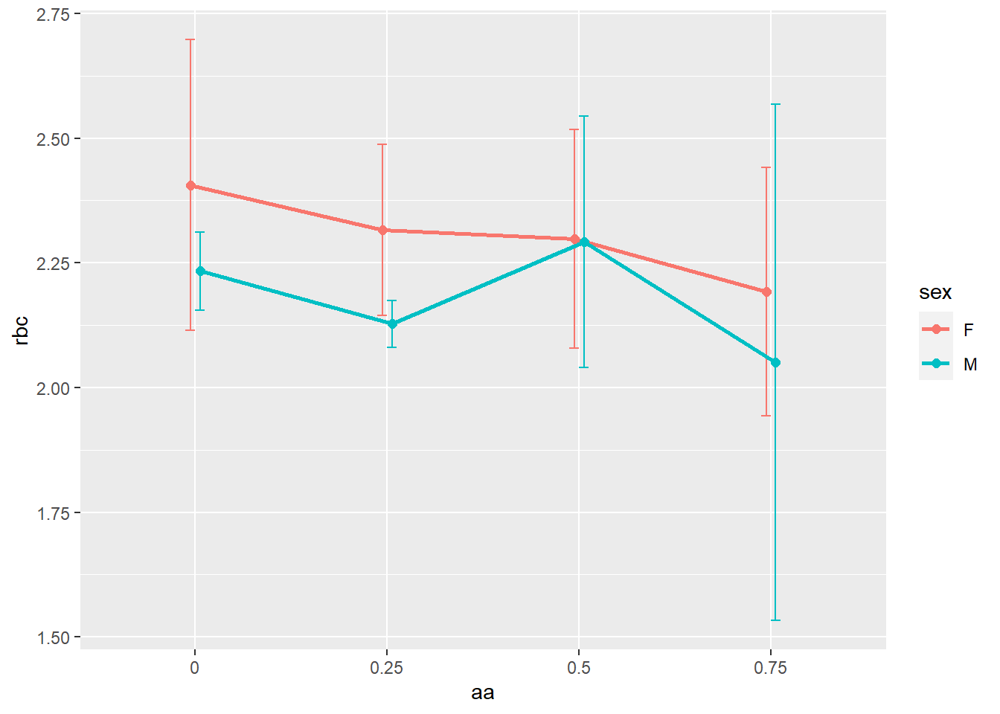
Sans les outliers, probablement pas d’interaction ni de différences significatives.
3.5.7 ANOVA sans les outliers
lm <- lm(rbc ~ aa * sex,
contrasts = list(aa = contr.sum, sex = contr.sum),
data = df)
Anova(lm, type = 3)## Anova Table (Type III tests)
##
## Response: rbc
## Sum Sq Df F value Pr(>F)
## (Intercept) 219.902 1 4097.8090 <2e-16 ***
## aa 0.265 3 1.6450 0.1947
## sex 0.177 1 3.2901 0.0774 .
## aa:sex 0.062 3 0.3838 0.7652
## Residuals 2.093 39
## ---
## Signif. codes: 0 '***' 0.001 '**' 0.01 '*' 0.05 '.' 0.1 ' ' 1Les différences ne sont pas significatives. Mais vérifions la validité de l’ANOVA.
3.5.8 Homogénéité des variances
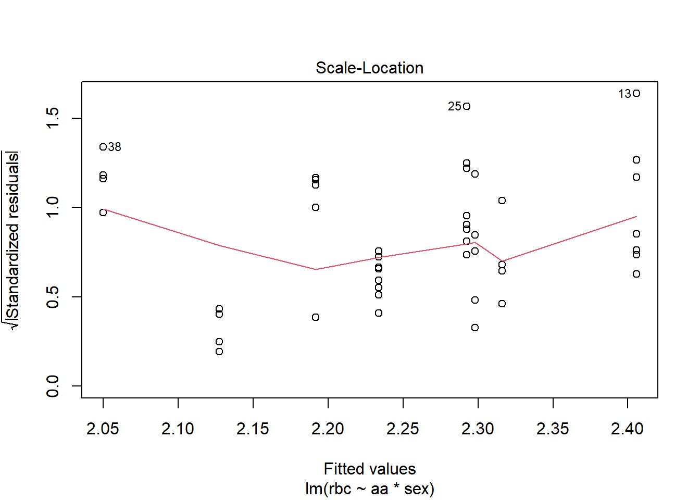
3.5.8.1 Comparaisons par paires
## Anova Table (Type II tests)
##
## Response: rbc
## Sum Sq Df F value Pr(>F)
## aa 0.27503 3 1.7870 0.16431
## sex 0.17583 1 3.4274 0.07116 .
## Residuals 2.15466 42
## ---
## Signif. codes: 0 '***' 0.001 '**' 0.01 '*' 0.05 '.' 0.1 ' ' 1C1 <- glht(lm, mcp(aa = "Tukey"))$linfct
C2 <- glht(lm, mcp(sex = "Tukey"))$linfct
C <- rbind(C1, C2)
C## (Intercept) aa0.25 aa0.5 aa0.75 sexM
## 0.25 - 0 0 1 0 0 0
## 0.5 - 0 0 0 1 0 0
## 0.75 - 0 0 0 0 1 0
## 0.5 - 0.25 0 -1 1 0 0
## 0.75 - 0.25 0 -1 0 1 0
## 0.75 - 0.5 0 0 -1 1 0
## M - F 0 0 0 0 1##
## Simultaneous Tests for General Linear Hypotheses
##
## Fit: lm(formula = rbc ~ aa + sex, data = df)
##
## Linear Hypotheses:
## Estimate Std. Error t value Pr(>|t|)
## 0.25 - 0 == 0 -0.092801 0.095685 -0.970 0.841
## 0.5 - 0 == 0 -0.009209 0.086003 -0.107 1.000
## 0.75 - 0 == 0 -0.195535 0.092898 -2.105 0.200
## 0.5 - 0.25 == 0 0.083593 0.098881 0.845 0.896
## 0.75 - 0.25 == 0 -0.102734 0.104111 -0.987 0.833
## 0.75 - 0.5 == 0 -0.186327 0.096356 -1.934 0.272
## M - F == 0 -0.124016 0.066988 -1.851 0.312
## (Adjusted p values reported -- single-step method)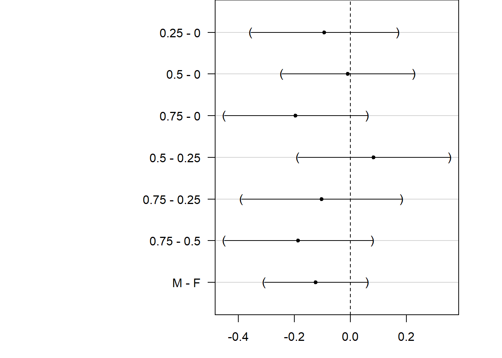